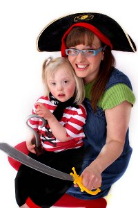

Samantha Aplin
Study
After attaining a First Class Honours Joint Honors Degree in Computing and Special Needs and Inclusion Studies I went on to complete my PGCE in Secondary Computer Science. I have a passion for Computing in Education and Training, programming and digital fabrication.
The title of my final project was “Engaging VLE Design” and questioned how aspects of engagement could be considered at the design stages of an online course. The final result of the paper was a Design Verification Document and a Course Design.
I have experienced IT in a professional capacity during my time as an IT Techncian alongside my studies. I have developed a small Buisiness developing creative solutions for artists and makers. This untilised my skills as a designer, a maker, a programmer and buisiness woman. My GNVQ in retail and time studuing hospitality at university has given me a keen sence of customer service.
I am closely involved in The Birmingham based Makerspace Fizzpop. It is a community run organisation that provides access to a range of fabrication equiptment for its members. I have recently set up a textiles group to encourage skills swapping amoungs members.
Makaton
Makaton signing for babies
Makaton signing for babies is a fun and easy way to learn to sign with your baby.
Signing while speaking has been shown to encourage the development of communication and language skills. It can help reduce frustrations and help you to understand your baby’s needs and wants.

Makaton signing for babies is provided as a series of sessions for you and your baby. Together you will learn up to 100 signs and symbols and have fun practising them in songs, games and activities.
Participants receive a pocket book of signs and symbols covering the vocabulary learned in the course, and approximately 30 other concepts that parents of young children often request.
Why not have a go and enjoy the benefits of signing with your baby.Duration
Six sessions.
Recommended for
Recommended for parents, family members, carers or members of professional teams who would like to sign with babies and children in their care and have no previous experience of Makaton.
Bullying
6SN004 A Critical Approach to Bullying in Schools
Schools are complex social systems that have a powerful effect on behaviour as well as learning. A great deal of research has been carried out on bullying, but it focuses largely on individual children's behaviour. Less research has looked at the ways in which schools themselves can cause behavioural problems between pupils through what they expect pupils to do, and how they go about rewarding and punishing the way pupils do it. This module takes a highly unusual approach to the problem of bullying, and develops students' political awareness through the use of images rather than words. To demonstrate your achievement in the learning outcomes you will produce a piece of artwork instead of the usual written assignment.

Adaptation
Here is an example of adapting my daughters homework for school.
The homework set was to Choose a book, read it and and write a book blurb.
I adapted the homework too make a movie of a book blurb. Bella was highly motivated by the oppertunity to make a movie.
She read two or three books whilst choosing and wrote out the headings that would be used. At this point she had technically compleated the homework but the motivating factor was to go on to produce the movie. Without this motivating factor it would have been segnigicantly more difficult to encourage her to complete the work.
Storytelling
Stories
Here are two of my most popular stories. Each includes audiance participation and a wide variety of signs.
Smartest Pirate
An adaptation of the well known book by Julia Donaldson, the giant pirate gets some new clothes that make him the smartest in town. But when he comes accross some friends in trouble what will he do? A story about helping others. Includes lots of animal signs, focus on signs for help and thank you. Lots of audiance participation and singing. Plenty of scope for follow up lesson activities.
Hungry Catterpillar

Loosely based on Eric Carle's The Hungry Catterpillar. The children enjoy chosing food and feeding the catterpillar. Lots of scope for children to find the correct foods, can be prompted by signs, sympols or photos to aid understanding.
New stories are added all the time or I can create a story to suit your needs.
Final Project
Please feel free to read my final project.
Final Project (PDF)
Learning Design
Moodle
The learning design was implemented in Moodle.
cre8iveapple.co.uk/moodle (opens new tab)
please email samantha@cre8iveapple.co.uk for a demo login.
Image App
Sound App
Education

Professional Membership
Education
- 2018 – 2019
- NQT year
James Brindley Academy
- 2017 – 2018
- PGCE Secondary Computer Science
Birmingham City University
- 2016
- Subject Knowledge Enhancement Computer Science
Wolverhampton University
- 2015 – 2016
- 40 credits at leval 5 - Creative Approaches to Digital and Visual Communication Research and Practice
Wolverhampton University
- 2007 – 2014
- First - BSc Computing joint with Special Needs and Inclusion Studies
Wolverhampton University
- 2007 - 2009
- Makaton Parent and Carers Route
- Makaton Local Tutor Training
Walsall Speech and Language therapy Department
- 2005-2006
- European Computer Driving Licence
Walsall College
- 2000-2002
- Welcome Host
- First Certificate in Food Safety (now expired)
- Ba in Hospitality (Yrs 1 and 2)
- Integrated Business Technology 2
- Advanced GNVQ in Retail and Distributive Services
Wolverhampton University
Lancaster and Morecambe College
- 1992-1997
- 10 GCSE’s A to C. A’s in Science, Maths and Art
Dallam Secondary School